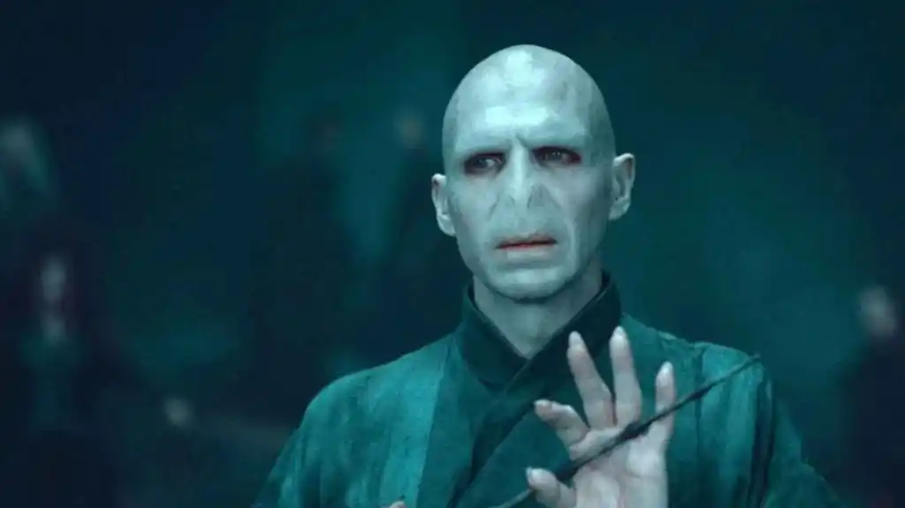
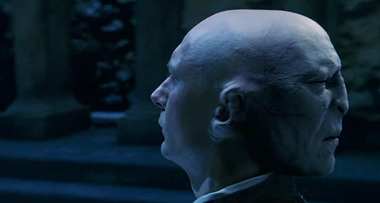
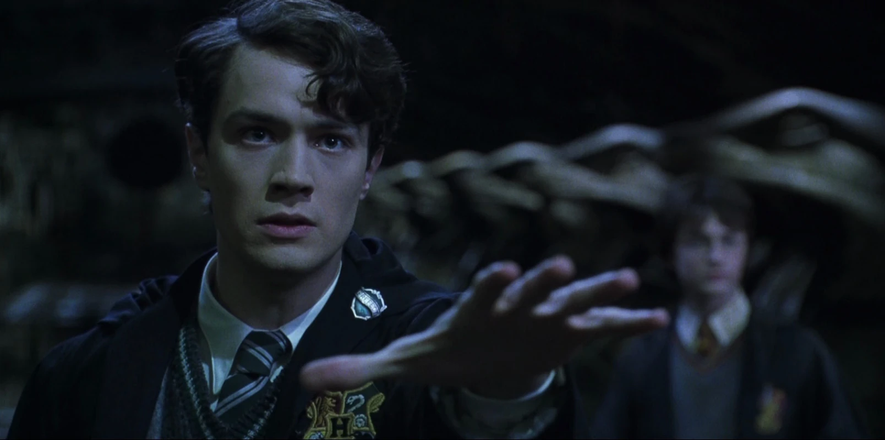
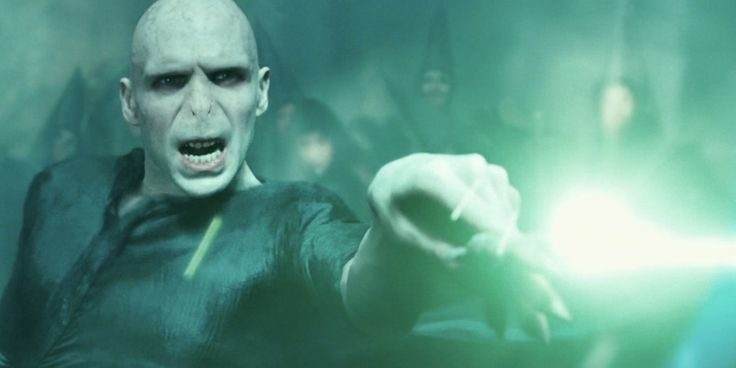
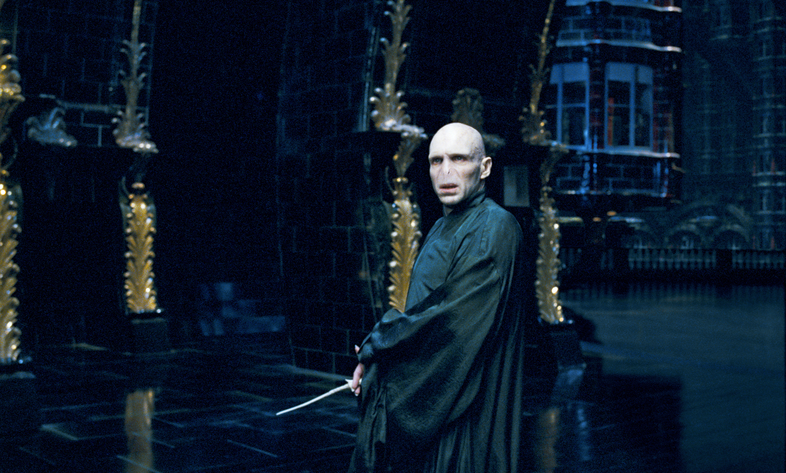
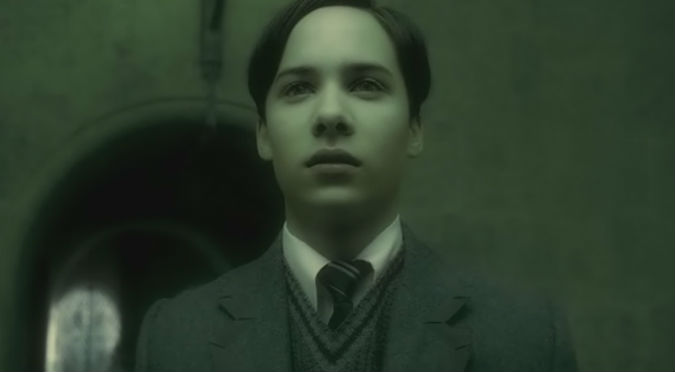
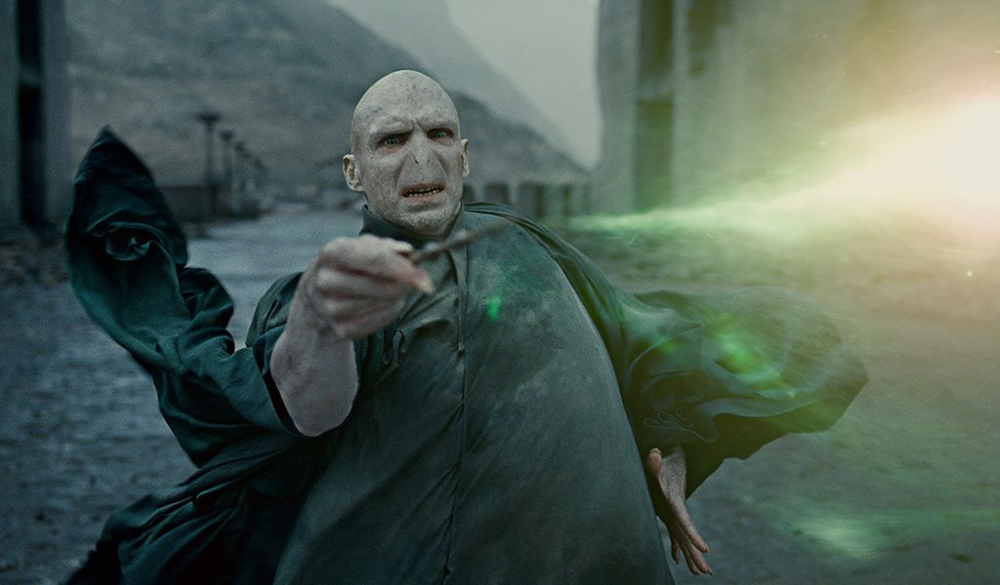

Lord Voldemort, conocido como el mago más oscuro de todos los tiempos, es el principal antagonista de la saga de Harry Potter. Durante su estancia en Hogwarts, se destacó como un talentoso estudiante en Hogwarts antes de convertirse en un tirano obsesionado con la inmortalidad y la pureza de sangre mágica.
A causa del intento de matar a Harry cuando era pequeño su cuerpo quedo destruido pero pudo sobrevivir a causa de los horrocruxes y se obsesiono con la busqueda de la piedra filosofal, estuvo apunto de conseguirla con la ayuda de Quirinus Quirrell, pero su plan no se pudo cumplir a causa de la destrucción de la piedra.
En la cámara de los secretos no apareció, pero apareció Tom Riddle a partir del diario. Con ayuda del diario, manipuló a Ginny y le hizo abrir la cámara de los secretos, sin que ella se diera cuenta...
En el caliz de fuego, hizo otro plan para regresar con su cuerpo físico y con ayuda de Peter y Barty Crouch Jr conseguio que Harry fuera a él pero a causa del Priori Incantatem, Harry logro escapar con el cadaver de Cedric pero Voldemort conseguio regresar.
En la orden del fénix, gracias al hecho de que el Ministerio de Magia negó su vuelta por miedo pudo andar libremente. Planifico conseguir la profecia del Ministerio manipulando a Harry pero fue destruida y no la conseguio.
En el ministerio del príncipe, enfadado con Lucius ordenó a Draco que matara a Dumbledore para vengarse.
En las reliquias de la muerte, gracias a la muerte de Dumbledore pudo andar libremente por todos lados. Intentó innumerables veces matar a Harry sin éxito y gracias al hecho de que destuyeron los horocruxes, en la batalla de Hogwarts fue derrotado por Harry.

Harry Potter y la piedra filosofal
"No hay bien ni mal. Solo existe el poder y aquellos demasiado débiles para ejercerlo."

Harry Potter y la cámara secreta
"Soy un recuerdo, guardado en un diario durante cincuenta años."

Harry Potter y el cáliz de fuego
"¡Levántate! ¡Levántate, Potter! Vamos a acabar con esto como debe ser."

Harry Potter y la orden del fénix
"Has perdido viejo amigo."

Harry Potter y el misterio del príncipe
"La grandeza inspira envidia, la envidia engendra rencor y el rencor produce mentiras."

Harry Potter y las reliquias de la muerte
"¡Harry Potter está muerto!"